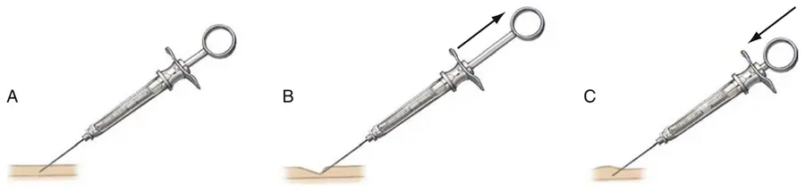

نسخه استخراجشده؛ ترجمه یا تأیید علمی انجام نشده است. وضعیت: captured
پسر ۵ سالهای در هر چهار کوادرانت پوسیدگی دارد. مادربزرگش میگوید وزنش «حدود ۱۵ کیلو» است و میخواهد همهی کار در یک جلسه تمام شود. کودک آرام و همکار است. چه برنامهای امن است؟
بیشتر مسمومیتهای جدی در کودک ۲ تا ۶ ساله، زیر ۳۰ کیلوگرم و همکار رخ داده که در یک جلسه برای هر چهار کوادرانت بیحسی گرفته است. هر عامل بهتنهایی شاید مشکلی نسازد، ولی روی هم که بیفتند، فاجعه میسازند.
در بسیاری از موارد مرگ، پنج تا هفت کارپول، اغلب محلول ساده، تزریق شده بود.
نکتهی طلایی: تزریق آهسته از آسپیراسیون هم مهمتر است. کارپولی که در ۳۰ ثانیه یا کمتر داخل رگ برود از حد مسمومیت میگذرد، ولی همان مقدار در دستکم ۶۰ ثانیه معمولاً زیر آستانهی تشنج میماند. سرعت ایدهآل ۱ میلیلیتر در دقیقه است.
